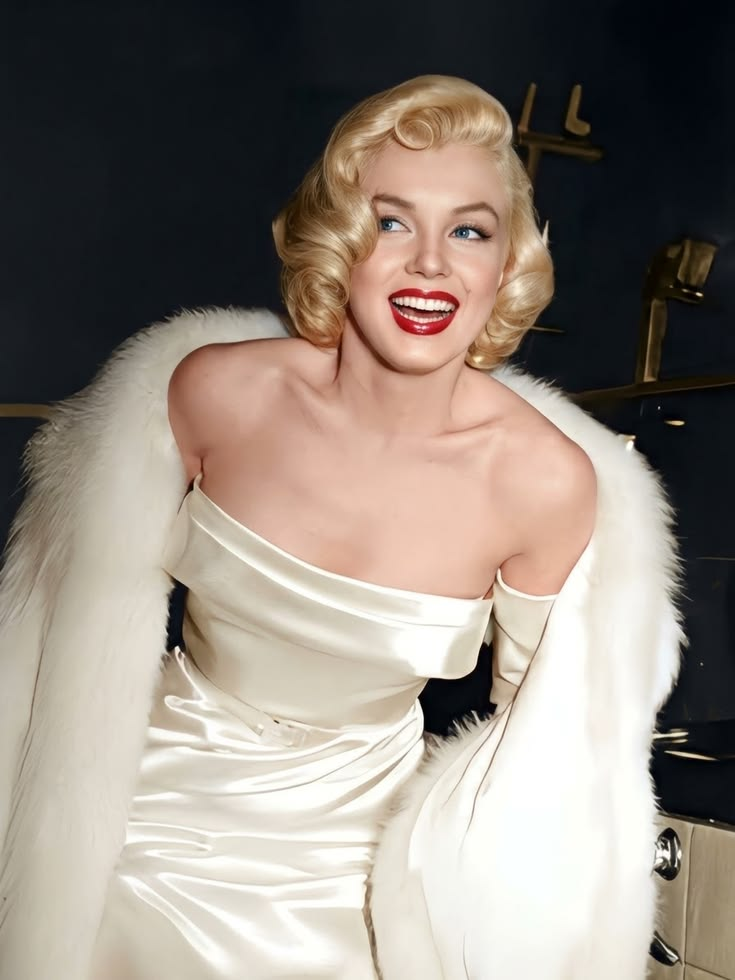
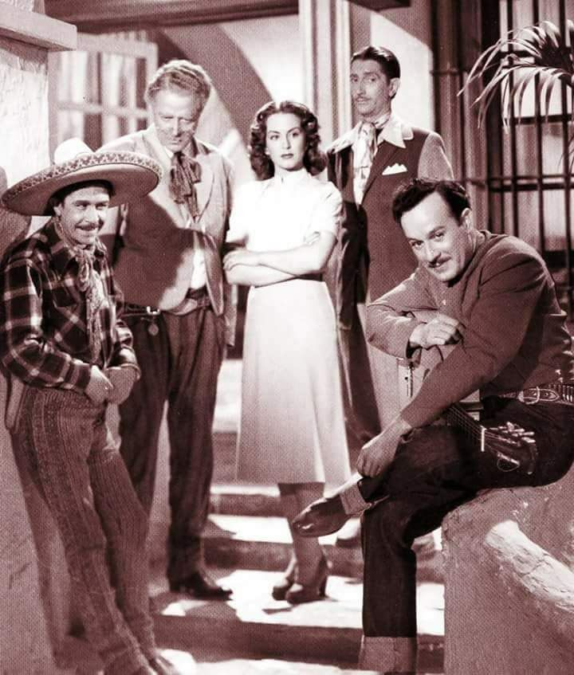
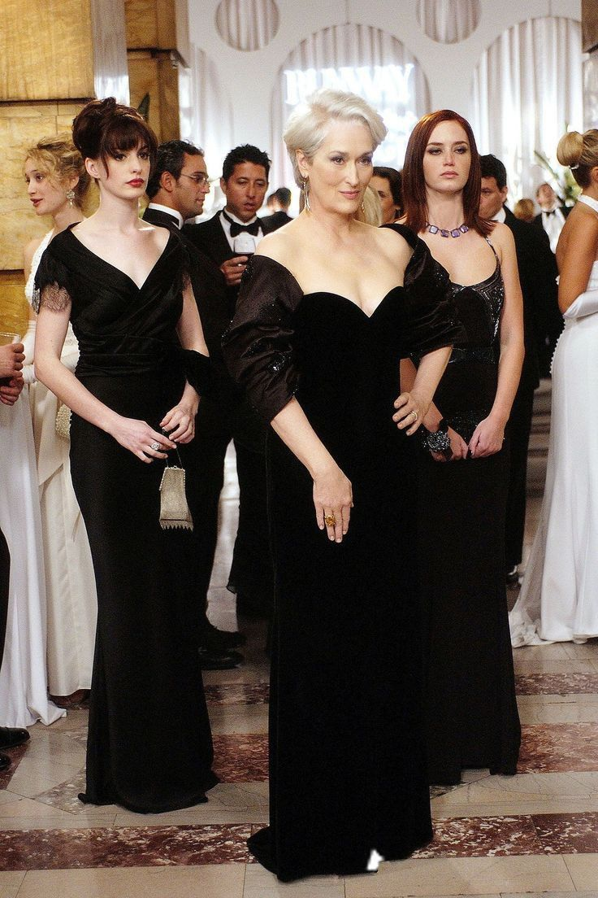
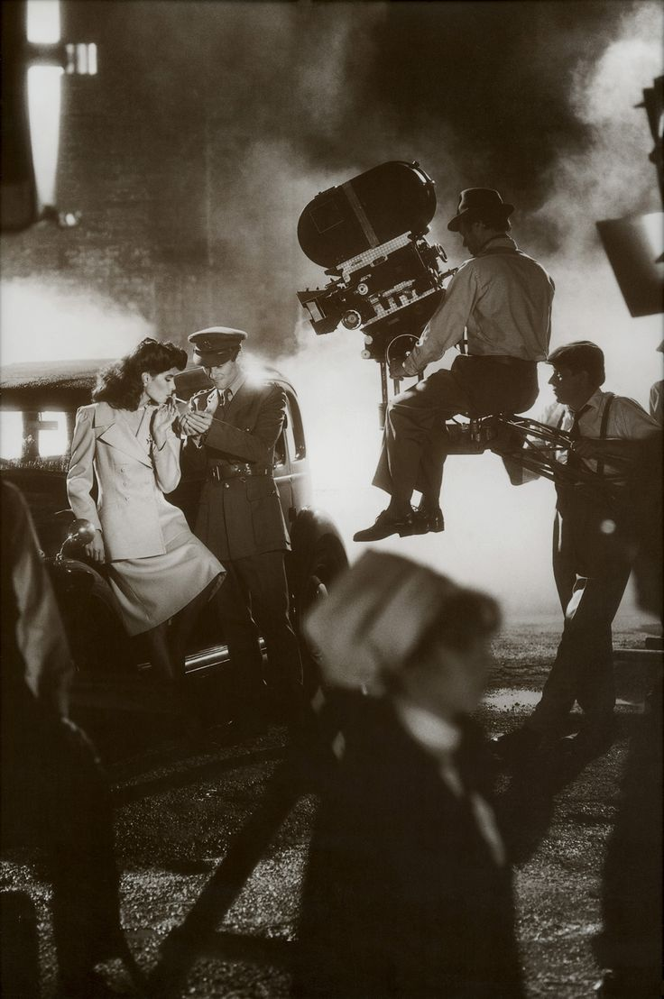
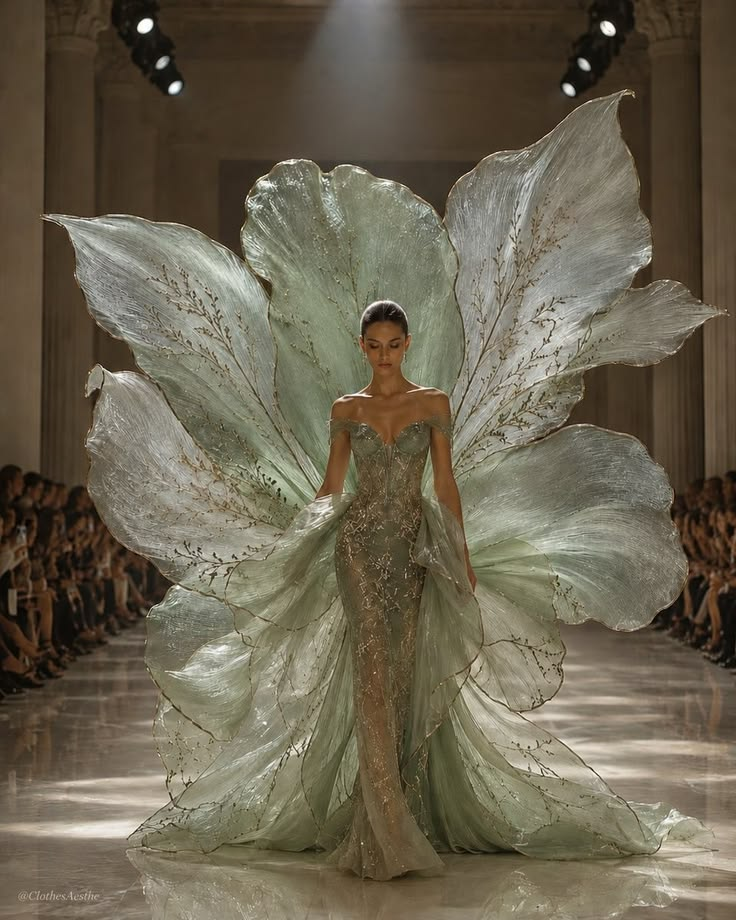
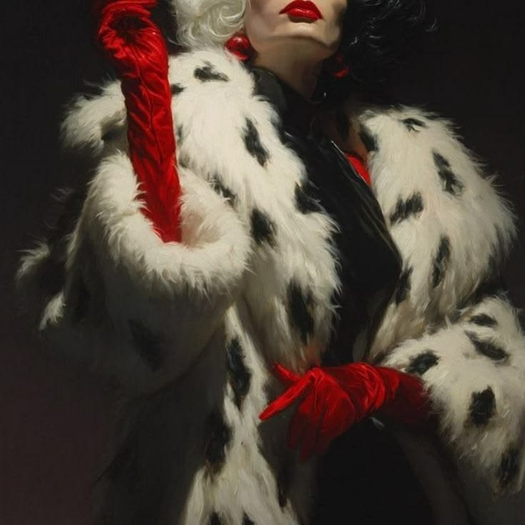

MODA
Años 50s
Vestidos con vuelo, faldas amplias y cinturas marcadas..
FASHION• STYLE• TRENDS
Inspirate
La inspiración en la moda consiste en descubrir ideas, estilos y combinaciones que nos ayudan a crear looks originales y expresar nuestra personalidad.
La inspiración en la moda nace de diferentes fuentes, como el arte, la cultura, la naturaleza, el cine y la creatividad personal.
Estas influencias nos permiten descubrir nuevas ideas, experimentar con prendas y crear combinaciones únicas. Más que seguir tendencias, se trata de encontrar aquello que nos identifica y convertirlo en una forma de expresión personal.
es un espacio dedicado a descubrir nuevas ideas y referencias dentro del mundo de la moda. A través del arte, la cultura, la naturaleza, el cine y la creatividad personal, busca mostrar diferentes formas de combinar prendas, explorar estilos y crear looks originales.
La moda vintage retoma elementos de décadas pasadas para crear estilos únicos que mezclan lo clásico con lo moderno.
Vestidos con vuelo, faldas amplias y cinturas marcadas..
Minifaldas, estampados geométricos y colores llamativos.
Pantalones acampanados, prendas bohemias y estampados florales.
Colores vibrantes, hombreras y accesorios grandes.
Jeans holgados, chamarras de mezclilla y camisetas básicas.
Lentes grandes, pañuelos, bolsos clásicos y cinturones vintage.
La moda urbana está inspirada en la vida cotidiana de las ciudades, la música y las expresiones juveniles.
Prendas cómodas y de estilo relajado.
Hip-hop, rap y cultura urbana.
Sudaderas, tenis, pantalones holgados y camisetas.
Gorras, mochilas, cadenas y lentes.
El cine es una fuente de inspiración porque sus personajes y vestuarios pueden crear estilos reconocibles y originales.

Los personajes de películas suelen destacar por su forma de vestir, sus colores y sus accesorios. Sus atuendos pueden convertirse en una fuente de inspiración para crear looks originales que reflejen diferentes personalidades y estilos.

Muchas películas muestran la moda de diferentes décadas y periodos históricos. Desde los elegantes años 20 hasta los estilos coloridos de los 80, el cine permite conocer cómo ha evolucionado la vestimenta a través del tiempo.

El vestuario cinematográfico utiliza prendas, telas, colores y accesorios para representar a cada personaje. Estos elementos también pueden inspirar combinaciones de ropa para la vida cotidiana.

Cada película tiene una identidad visual que se refleja en sus escenarios, colores, iluminación y vestuario. Estas características pueden utilizarse como referencia para crear estilos con una esencia particular.

Los mundos mágicos y fantásticos del cine presentan vestuarios llenos de creatividad, texturas y detalles especiales. Sus diseños pueden inspirar looks diferentes, con elementos llamativos y combinaciones fuera de lo común.

La personalidad y la historia de los personajes influyen en su manera de vestir. Analizar sus prendas, colores y accesorios permite descubrir cómo la ropa puede transmitir emociones, actitudes e identidad.
La naturaleza ofrece ideas para crear combinaciones de colores, estampados y texturas en la moda.
Verde, beige, café y azul.
Flores, hojas y formas orgánicas.
Algodón, lino y tejidos naturales.
Paisajes, plantas, animales y estaciones del año.
cuentanos cual es tu mayor inspiración de moda.